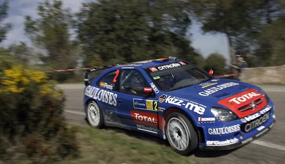
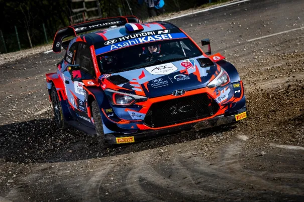
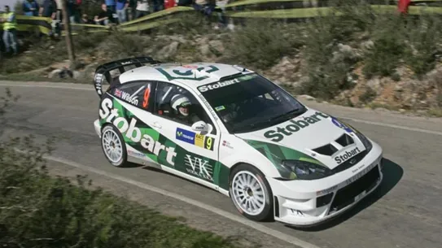
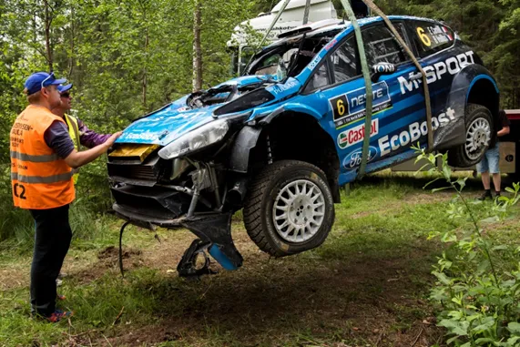
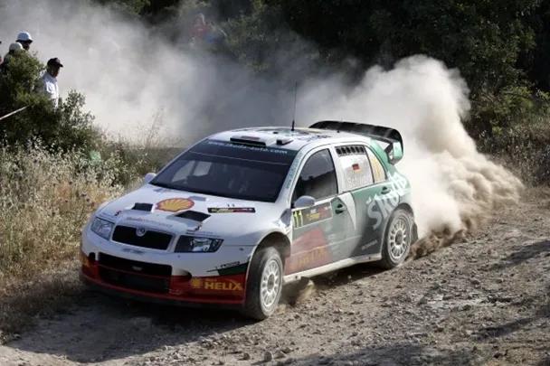
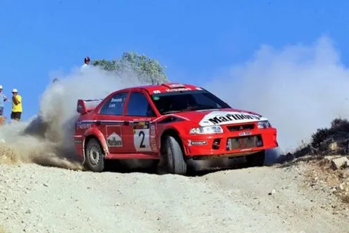
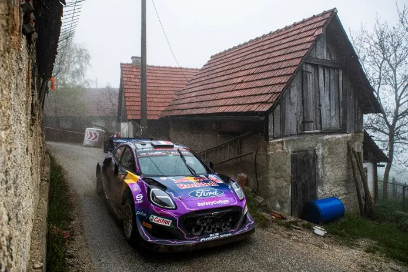

7 WRC drivers that had seasons to forget
At the end of each WRC seasons, we tend to focus on the positives. Who won the most rallies, how good was the championship, who was the fastest, etc. What we tend to talk about for a bit and then forget pretty fast, is drivers who had absolute stinkers. But today we focus on the bad, and not the good. This is the WRC hall of shame, here are 7 of the worst seasons by WRC drivers.
1. Xevi Pons – Kronos Citroen 2006

If you know me, then you know my feelings towards Xevi Pons. Unfortunately (for you) I cannot go into rant mode about his 2006 season, because I need to maintain the front that this is an impartial blog. Now, despite saying that, I have to ask. Why was this man allowed to be Loeb’s teammate in the Xsara. In 2005, Pons drove a Citroen Xsara as Manfred Stohl’s teammate in the OMV Citroen team, with lackluster performances, apart from his outing in his home rally in Catalunya, where he was close to getting his first podium, but was denied by Mikko Hirvonen in a privateer Ford, after the Spaniard stalled on the start of the final stage. If that was why Kronos decided he was the man to partner Loeb in 2006, then I’d call it very narrow sighted to say the least. Pons’ 2006 was a disaster. The Spaniard failed to get on the podium that season, and finished 7th in the standings, some 17 points behind teammate Dani Sordo in his debut WRC campaign. To give him some credit, after Loeb’s injury he did get some consistent results, getting 4 consecutive top 5 finishes in the last 4 rounds. But that comes with the caveat that there was 0 competition. The Fords would be cruising at the front, the Subarus would have predictably broken down by then, and Pons would be fighting Stohl in the 307 or some random privateer in a Stobart, like Kosti Katajamaki. And I should mention he had #1 on his door after Turkey, which has to be an insult to rallying in general.
2. Pierre Louis Loubet – 2C Competition 2021

One of my most recent inclusions on this seven. Pierre Louis Loubet had an absolutely nightmarish 2021 season. The young Frenchman already drove some rallies in a privateer i20 WRC with 2C in 2020, after the season restarted after covid, with mediocre results. But in 2021, the [redacted] would really hit the fan. Loubet would only finish in the top 10 once in 9 rallies (7th in Estonia, some 8 minutes behind the winner) . Granted, some of the retirements weren’t his fault, like in Arctic Finland the engine gave way, and in Ypres he got a puncture which made him drop down a ditch among others. What all these retirements had as an effect though, is that they destroyed Loubet’s confidence and he found himself in an endless cycle of, lets go slow and just finish, to gain experience and kilometers in the car. Only that finish rarely came. He would also be benched twice in the season, being replaced by Oliver Solberg for Safari, and benched for Finland entirely. And to cap it all off, he was hit by a car in Paris, and missed the last 2 rounds of the season. Thankfully for him, in 2022 he managed to find some of his lost confidence back, driving an M Sport Puma Rally1, and not the Frankenstein car that was the 2C i20.
3. Matthew Wilson – Stobart Ford 2006

This could be considered cheating because after all this was Matthew Wilson’s first season in the WRC, but I will include it anyway. Matthew is the son of M Sport team boss Malcolm Wilson, so he had a seat basically guaranteed for half a decade in the WRC in M Sport machinery. Matthew came in the WRC as a promising prospect, after winning a rally in the British rally championship, and also finishing 3rd in the standings the year before, as an 18-year-old. But the WRC isn’t that easy. Matthew would struggle, scoring only 1 point despite competing in 16 rallies with the Stobart Ford outfit. And even then, that was because Luis Perez Companc (who was also in a Stobart Ford) lost 20s in the last Super Special. A switch to the newest spec Ford Focus WRC wouldn’t help Wilson much, as his pace stayed the same. He would generally finish just outside the top 10 and around 10 to 15 minutes behind the leader. He would finish the season in 28th place in the standings, behind many PWRC drivers.
4. Eric Camilli – M Sport 2016

Staying with Ford, another driver who endured a bad season with them was Eric Camilli. The Frenchman was drafted in a factory M Sport Fiesta to partner Mads Ostberg for 2016. And it did not go well. It was a case of being promoted way too early for Camilli, as the Frenchman would struggle for consistency, crashing out of the first 3 rallies, and after some good results in Poland and Portugal, this off in Finland started another streak of crashes. Camilli would SR or DNF in 7 out of the 13 rallies, and would finish 11th in the standings, behind the part time Citroen DS3s of Meeke and Breen. What is also a factor in me putting Camilli here is that M Sport demoted Elfyn Evans to a WRC2 program and put Ott Tanak in the 3rd DMACK car for Camilli to be in the Factory M Sport. And both of these drivers would turn out to be rally winners in the season after.
5. Armin Schwarz – Skoda 2005

Skoda went through 8 different drivers in 2005, and Armin Schwarz did 15 of them. The problem with that, is that he only scored 1 point in those 15 rallies, finishing 8th in his final ever event in the WRC in Australia. Granted, Schwarz was 43 at the time, but still, why did Skoda let him do 15 rallies? Schwarz was slow in the Fabia, usually being 10 minutes off the leader. He was the last Skoda to get points, despite competing in all but 1 rally with the team. And the Skoda being slow isn’t an excuse, because McRae showed in Australia that in the right hands the Fabia can be solid (not fast, but solid). To give you an example of how slow Schwarz was, in Catalunya, he finished 11th, 9 minutes off the pace, and Jan Kopecky finished 8th, 5 minutes off Loeb. A 4-minute gap compared to your teammate isn’t a good showing and its what Armin did that entire season.
6. Freddy Loix – Mitsubishi 2000

To put it bluntly Freddy Loix is the reason why Mitsubishi won so little constructors championships when Makinen was at his hay day. Loix wasn’t the same after his Safari 1999 crash where he suffered a broken vertebrae. He scored just 4 points in 2000, 32 points short off teammate Tommi Makinen, and finished the season a lowly 15th, behind many part time drivers. Loix had a highest finish of 5th in Argentina. He also had 7 retirements. And even when he finished he was off the pace and not as competitive as Mitsubishi would have wanted him to be. Loix was by far the worst no 2 driver at the WRC at the time, and i dont know how he managed to do 3 years in the Mitsubishi Lancer.
7. Adrien Fourmaux – M Sport 2022

Our most recent
inclusion is from last year and it is Adrien Fourmaux’s disaster of a season
that was 2022. It all started in Monte, where he went off spectacularly from 4th.
His misery continued in Sweden where he retired from an engine issue. He’d
crash again in Croatia and Sardegna, and would have suspension issues in Safari
and Finland which meant he finished, but outside the top 10. Heading to Ypres
he had 2 points finishes, but things were looking up for him, as he showed
promising pace and was as high as 4th. On Sunday the instruction he
was given was to bring the car home. But he crashed out in spectacular fashion
on the penultimate stage. He was benched by M Sport for 3 out of the last 4
rounds and he was demoted to WRC2 for 2023. He was caught in a similar loop
like Loubet where you try to go slow to finish, but the finish never comes.
What other drivers had seasons to forget ? Who do you think is the driver with
the worst individual season ever ? Let us know in the comments !
All pics are from the Red Bull Content Pool


Comments